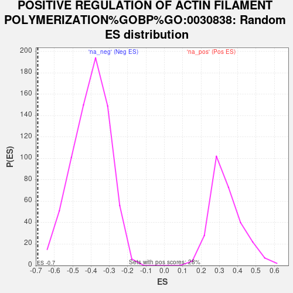

Profile of the Running ES Score & Positions of GeneSet Members on the Rank Ordered List
| Dataset | gene_ranks |
| Phenotype | NoPhenotypeAvailable |
| Upregulated in class | na_neg |
| GeneSet | POSITIVE REGULATION OF ACTIN FILAMENT POLYMERIZATION%GOBP%GO:0030838 |
| Enrichment Score (ES) | -0.6909359 |
| Normalized Enrichment Score (NES) | -1.7233188 |
| Nominal p-value | 0.0 |
| FDR q-value | 0.24008062 |
| FWER p-Value | 0.945 |
| SYMBOL | RANK IN GENE LIST | RANK METRIC SCORE | RUNNING ES | CORE ENRICHMENT | |
|---|---|---|---|---|---|
| 1 | HCK | 767 | 2.004 | -0.0019 | No |
| 2 | SNX9 | 3205 | 0.564 | -0.1299 | No |
| 3 | FER | 3562 | 0.479 | -0.1402 | No |
| 4 | PTK2B | 4453 | 0.307 | -0.1848 | No |
| 5 | FCHSD1 | 4460 | 0.307 | -0.1787 | No |
| 6 | NCKAP1 | 5270 | 0.180 | -0.2214 | No |
| 7 | FCHSD2 | 5453 | 0.155 | -0.2285 | No |
| 8 | PFN2 | 6684 | 0.004 | -0.2990 | No |
| 9 | NCK1 | 11321 | -0.590 | -0.5525 | No |
| 10 | PRKCE | 13401 | -1.128 | -0.6481 | No |
| 11 | ARF6 | 13648 | -1.195 | -0.6371 | No |
| 12 | TENM1 | 14588 | -1.559 | -0.6582 | Yes |
| 13 | NCK2 | 14804 | -1.660 | -0.6357 | Yes |
| 14 | EVL | 15107 | -1.826 | -0.6147 | Yes |
| 15 | CDC42EP4 | 15127 | -1.843 | -0.5772 | Yes |
| 16 | CDC42EP2 | 15613 | -2.143 | -0.5600 | Yes |
| 17 | LMOD1 | 15695 | -2.194 | -0.5186 | Yes |
| 18 | BAIAP2L1 | 15920 | -2.351 | -0.4822 | Yes |
| 19 | BIN1 | 16327 | -2.718 | -0.4484 | Yes |
| 20 | CTTN | 16439 | -2.855 | -0.3949 | Yes |
| 21 | PFN1 | 16666 | -3.167 | -0.3414 | Yes |
| 22 | CDC42EP3 | 16804 | -3.393 | -0.2781 | Yes |
| 23 | VASP | 16914 | -3.613 | -0.2085 | Yes |
| 24 | BAIAP2 | 17116 | -4.247 | -0.1309 | Yes |
| 25 | CCL26 | 17417 | -7.180 | 0.0025 | Yes |
